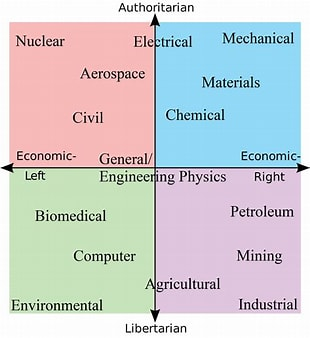

- M.Sc. Statistics
- M.Sc. Applied Mathematics
- M.A./M.Sc. Mathematics
- M.Sc. Physics
- M.Sc. Space Physics
- M.Sc. Nuclear Physics
- M.Sc. Meteorology
- M.Sc. Physical Oceanography
- M.Sc.(Tech.) Geophysics (3 years duration)
- M.Sc.(Tech.) Geophysics (3 years duration)
- M.Sc. Marine Geophysics
- M.Sc. Hydrology
- M.Sc. Biochemistry
- M.Sc. Biotechnology
- M.Sc. Agricultural Biotechnology (offered in the Department of Botany, A.U.)
- M.Sc. Horticulture & Landscape Management (offered at department of Botany, A.U.)
- M.Sc. Chemistry with the following specialisations (Organic Chemistry, Chemistry & Analysis of Foods, Drugs & Water, Inorganic Chemistry, Analytical Chemistry, Bio-Inorganic Chemistry, Environmental Chemistry, Marine Chemistry, Physical Chemistry, Nuclear Chemistry)
- M.Sc. Applied Chemistry
- M.Sc. Environmental Sciences
- M.Sc. Microbiology
- M.Sc. Botany
- M.Sc. Zoology
- M.Sc. Marine Biology and Fisheries
- M.Sc. Coastal Aquaculture & Marine Biotechnology
- M.Sc. Marine Biotechnology
- M.Sc. Computer Science & Statistics
- M.Sc. Human Genetics
- M.Sc. Molecular Genetics
